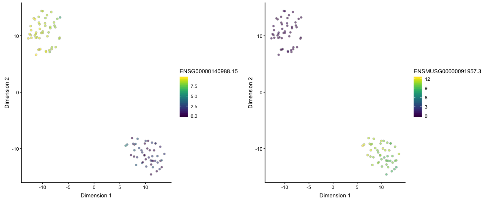
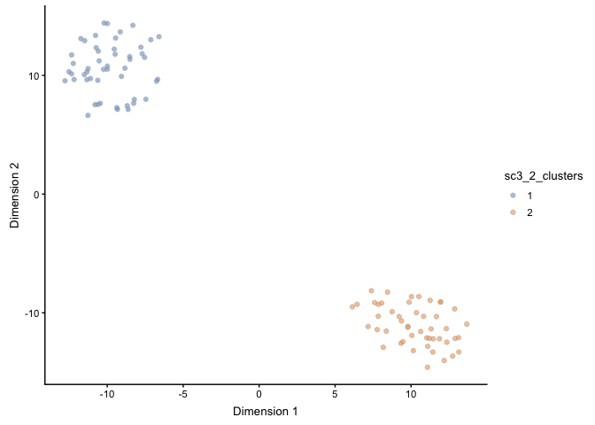

iSEE (Rue-Albrecht, Marini, Soneson and Lun, F1000Research 2018) is an R
package for interactive exploratory analysis and visualization of data provided
in SummarizedExperiment objects (or any class extending SummarizedExperiment).
Here, we show how to prepare the output generated by alevin in a form suitable
for exploration with iSEE. We illustrate the procedure using the example data
provided in the alevinQC R package
(https://github.com/csoneson/alevinQC),
which consists of a mix of mouse and human cells, and was quantified using a
combined mouse and human reference transcriptome.
suppressPackageStartupMessages({
library(tximeta)
library(iSEE)
library(shiny)
library(scater)
library(scran)
library(SC3)
library(cowplot)
})
Alevin output files can be imported into R using the tximport or tximeta
packages. While tximport returns a count matrix, tximeta generates a
SummarizedExperiment object, and attempts to automatically retrieve information
about the transcriptome that was used for the alevin quantification. Note that
you need tximport >= 1.11.5 or tximeta >= 1.1.10 to read alevin output.
Alternatively, you can load the alevin count matrix with the code provided in
the alevin-monocle tutorial
and create the SummarizedExperiment object manually.
## Path to alevin quant matrix
alevinquant <- system.file("extdata/alevin_example/alevin/quants_mat.gz",
package = "alevinQC")
## Read alevin output with tximeta and generate a SummarizedExperiment object
alevin <- tximeta::tximeta(coldata = data.frame(files = alevinquant,
names = "sample1"),
type = "alevin")
## importing quantifications
## reading in alevin gene-level counts across cells
## couldn't find matching transcriptome, returning un-ranged SummarizedExperiment
The code above generates a SummarizedExperiment object, with the UMI counts from
alevin contained in the counts assay.
alevin
## class: SummarizedExperiment
## dim: 107450 298
## metadata(3): tximetaInfo quantInfo countsFromAbundance
## assays(1): counts
## rownames(107450): ENSG00000223972.5 ENSG00000227232.5 ...
## ENSMUSG00000094855.1 ENSMUSG00000095041.7
## rowData names(0):
## colnames(298): CGTAGCGCACACATGT CTGGTCTTCGGTTAAC ...
## TGGGCGTAGCGTCAAG CGAGCACTCCCAGGTG
## colData names(0):
dim(assay(alevin, "counts"))
## [1] 107450 298
The SummarizedExperiment object can be directly imported and explored with
iSEE.
app <- iSEE(alevin)
shiny::runApp(app)
At this stage, any additional row (gene) and/or column (cell) annotations, as
well as reduced dimension representations, can be added to the object for
visualization with iSEE. As an example, we will first flag the cells that are
included in the final whitelist from alevin, and subset the SummarizedExperiment
object to only those cells. Then, we will use the scater package to calculate
QC metrics and perform dimension reduction using PCA and t-SNE (after
normalization and log-transformation of the counts using the scran package),
and finally cluster the cells using the SC3 package. All the output of these
operations are stored in the object created above (which is converted to a
SingleCellExperiment to allow the inclusion of the reduced dimension
representations). Note that the code below is just an example, and there are
many other ways of performing these analyses. For more detailed information
about each step, we refer to the documentation and publications corresponding to
the respective packages.
## Add information about whitelist membership
whitelist <- read.delim(system.file("extdata/alevin_example/alevin/whitelist.txt",
package = "alevinQC"),
header = FALSE, as.is = TRUE)$V1
alevin$whitelist <- colnames(alevin) %in% whitelist
## Subset to only cells in whitelist
alevin <- alevin[, alevin$whitelist]
## Convert to SingleCellExperiment
alevin <- as(alevin, "SingleCellExperiment")
## Normalize using scran/scater
alevin <- scran::computeSumFactors(alevin, min.mean = 0.25)
alevin <- scater::normalize(alevin)
## Calculate QC metrics using scater
alevin <- scater::calculateQCMetrics(alevin)
## Dimension reduction
set.seed(42)
alevin <- scater::runPCA(alevin)
alevin <- scater::runTSNE(alevin)
## t-SNE plots, coloured by the expression of a human gene and a mouse gene,
## respectively
cowplot::plot_grid(
scater::plotTSNE(alevin, colour_by = "ENSG00000140988.15"),
scater::plotTSNE(alevin, colour_by = "ENSMUSG00000091957.3"),
nrow = 1
)

## Clustering with SC3
rowData(alevin)$feature_symbol <- rownames(alevin)
alevin <- sc3(alevin, n_cores = 1, ks = 2:5)
## Setting SC3 parameters...
## Calculating distances between the cells...
## Performing transformations and calculating eigenvectors...
## Performing k-means clustering...
## Calculating consensus matrix...
## t-SNE plot, coloured by the assigned cluster labels
scater::plotTSNE(alevin, colour_by = "sc3_2_clusters")

app <- iSEE(alevin)
shiny::runApp(app)
sessionInfo()
## R Under development (unstable) (2018-11-05 r75543)
## Platform: x86_64-apple-darwin15.6.0 (64-bit)
## Running under: macOS High Sierra 10.13.6
##
## Matrix products: default
## BLAS: /Library/Frameworks/R.framework/Versions/3.6/Resources/lib/libRblas.0.dylib
## LAPACK: /Library/Frameworks/R.framework/Versions/3.6/Resources/lib/libRlapack.dylib
##
## locale:
## [1] en_US.UTF-8/en_US.UTF-8/en_US.UTF-8/C/en_US.UTF-8/en_US.UTF-8
##
## attached base packages:
## [1] parallel stats4 stats graphics grDevices utils datasets
## [8] methods base
##
## other attached packages:
## [1] bindrcpp_0.2.2 cowplot_0.9.3
## [3] SC3_1.11.0 scran_1.11.12
## [5] scater_1.11.5 ggplot2_3.1.0
## [7] shiny_1.2.0 iSEE_1.3.6
## [9] SingleCellExperiment_1.5.1 SummarizedExperiment_1.13.0
## [11] DelayedArray_0.9.5 BiocParallel_1.17.3
## [13] matrixStats_0.54.0 Biobase_2.43.0
## [15] GenomicRanges_1.35.1 GenomeInfoDb_1.19.1
## [17] IRanges_2.17.3 S4Vectors_0.21.9
## [19] BiocGenerics_0.29.1 tximeta_1.1.11
##
## loaded via a namespace (and not attached):
## [1] BiocFileCache_1.7.0 plyr_1.8.4
## [3] igraph_1.2.2 lazyeval_0.2.1
## [5] shinydashboard_0.7.1 digest_0.6.18
## [7] foreach_1.4.4 ensembldb_2.7.3
## [9] htmltools_0.3.6 viridis_0.5.1
## [11] gdata_2.18.0 magrittr_1.5
## [13] memoise_1.1.0 cluster_2.0.7-1
## [15] doParallel_1.0.14 ROCR_1.0-7
## [17] limma_3.39.3 Biostrings_2.51.1
## [19] prettyunits_1.0.2 colorspace_1.3-2
## [21] rrcov_1.4-7 blob_1.1.1
## [23] rappdirs_0.3.1 WriteXLS_4.0.0
## [25] xfun_0.4 dplyr_0.7.8
## [27] crayon_1.3.4 RCurl_1.95-4.11
## [29] jsonlite_1.6 tximport_1.11.6
## [31] bindr_0.1.1 iterators_1.0.10
## [33] glue_1.3.0 registry_0.5
## [35] gtable_0.2.0 zlibbioc_1.29.0
## [37] XVector_0.23.0 Rhdf5lib_1.5.1
## [39] DEoptimR_1.0-8 rentrez_1.2.1
## [41] HDF5Array_1.11.10 scales_1.0.0
## [43] mvtnorm_1.0-8 pheatmap_1.0.10
## [45] DBI_1.0.0 edgeR_3.25.3
## [47] rngtools_1.3.1 bibtex_0.4.2
## [49] miniUI_0.1.1.1 Rcpp_1.0.0
## [51] viridisLite_0.3.0 xtable_1.8-3
## [53] progress_1.2.0 bit_1.1-14
## [55] DT_0.5 htmlwidgets_1.3
## [57] httr_1.4.0 RColorBrewer_1.1-2
## [59] gplots_3.0.1 shinyAce_0.3.3
## [61] pkgconfig_2.0.2 XML_3.98-1.16
## [63] dbplyr_1.2.2 locfit_1.5-9.1
## [65] dynamicTreeCut_1.63-1 labeling_0.3
## [67] tidyselect_0.2.5 rlang_0.3.0.1
## [69] reshape2_1.4.3 later_0.7.5
## [71] AnnotationDbi_1.45.0 munsell_0.5.0
## [73] tools_3.6.0 RSQLite_2.1.1
## [75] rintrojs_0.2.0 evaluate_0.12
## [77] stringr_1.3.1 yaml_2.2.0
## [79] knitr_1.21 bit64_0.9-7
## [81] robustbase_0.93-3 caTools_1.17.1.1
## [83] purrr_0.2.5 AnnotationFilter_1.7.0
## [85] nlme_3.1-137 doRNG_1.7.1
## [87] mime_0.6 biomaRt_2.39.2
## [89] compiler_3.6.0 beeswarm_0.2.3
## [91] curl_3.2 e1071_1.7-0
## [93] tibble_1.4.2 statmod_1.4.30
## [95] pcaPP_1.9-73 stringi_1.2.4
## [97] GenomicFeatures_1.35.4 lattice_0.20-38
## [99] ProtGenerics_1.15.0 Matrix_1.2-15
## [101] shinyjs_1.0 pillar_1.3.1
## [103] BiocNeighbors_1.1.6 bitops_1.0-6
## [105] httpuv_1.4.5.1 rtracklayer_1.43.1
## [107] R6_2.3.0 promises_1.0.1
## [109] KernSmooth_2.23-15 gridExtra_2.3
## [111] vipor_0.4.5 codetools_0.2-16
## [113] colourpicker_1.0 gtools_3.8.1
## [115] assertthat_0.2.0 rhdf5_2.27.5
## [117] pkgmaker_0.27 withr_2.1.2
## [119] GenomicAlignments_1.19.0 Rsamtools_1.35.0
## [121] GenomeInfoDbData_1.2.0 mgcv_1.8-26
## [123] hms_0.4.2 grid_3.6.0
## [125] class_7.3-15 rmarkdown_1.11
## [127] DelayedMatrixStats_1.5.0 Rtsne_0.15
## [129] ggbeeswarm_0.6.0